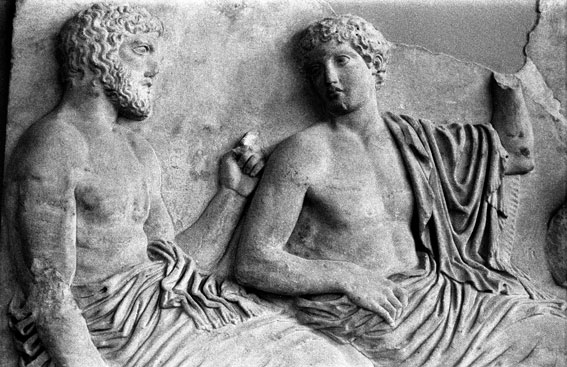
La civilización griega fue una de las más influyentes de la historia, destacando por su arte (escultura, arquitectura, cerámica, teatro, literatura) y por un importante legado filosófico, con pensadores como Sócrates, Platón y Aristóteles. Asimismo, en la política y un legado cultural que sentó las bases de la civilización occidental.
Sus aportes ejercieron influencia sobre el Imperio romano y, posteriormente, sobre los artistas e intelectuales del Renacimiento.
La antigua Grecia se ubicaba en el sureste de Europa, abarcando la península de los Balcanes, una región rodeada por importantes mares como el mar Egeo, el mar Jónico y el mar Mediterráneo; en sus momentos de mayor apogeo, ocupó toda la península griega hasta las costas de las actuales Macedonia, Turquía e Italia y en varias islas como: Creta, Chipre, Rodas, y Sicilia. Una de sus características más importantes era su geografía montañosa. Grecia estaba formada por muchas montañas y valles, lo que dificultaba la comunicación terrestre entre las distintas regiones. Esto provocó que no existiera un solo país unificado, sino que se desarrollaran múltiples ciudades independientes llamadas polis.
Además, Grecia contaba con una gran cantidad de islas, más, muchas de ellas en el mar Egeo. Estas islas, facilitaron el desarrollo de la navegación y el comercio marítimo. No obstante, debido a la falta de tierras fértiles en algunas zonas, los griegos se vieron obligados a expandirse y colonizar otras regiones del Mediterráneo y el mar Negro. Esto dio origen a colonias en lugares como Asia Menor, el sur de Italia y la costa del norte de África.
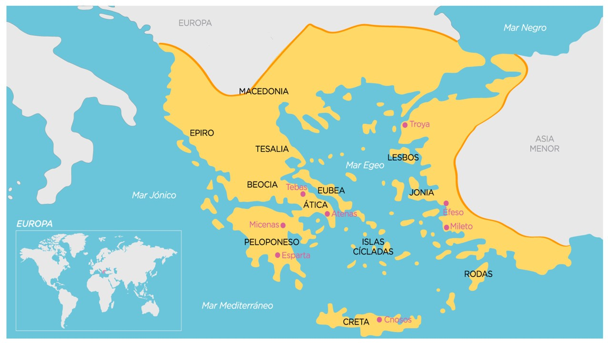
La civilización griega fue de las más importantes de la antigüedad y se desarrolló aproximadamente entre los siglos VIII a. C. y II a. C. El comienzo de la civilización griega coincide con el final de la civilización micénica, que había erigido grandes palacios en la Grecia continental y en islas como Creta, pero dejó repentinamente de existir en torno al año 1100 a. C. (XI a. C.). La civilización griega no fue un imperio unificado, sino un conjunto de ciudades-estado independientes que compartían elementos culturales comunes, como: el idioma griego, la religión politeísta, las tradiciones y costumbres, estos se desrrollaron durante la era arcaica y la época clásica y se les llamaba polis. Cada polis era una unidad política diferente que tenía un centro urbano principal y tierras circundantes. Todos los griegos identificaban la cultura helénica que los unía, pero consideraban que su patria era su polis. Las polis más importantes de este periodo fueron Atenas, Esparta, Mileto, Corinto y Tebas.
La civilizacion griega paso por varios periodos importantes:
1. Las civilizaciones Prehelenicas(Minoicos y Micenicos): Antes de que existieran los griegos como los conocemos, el mar Egeo fue cuna de dos grandes culturas de la Edad del Bronce.
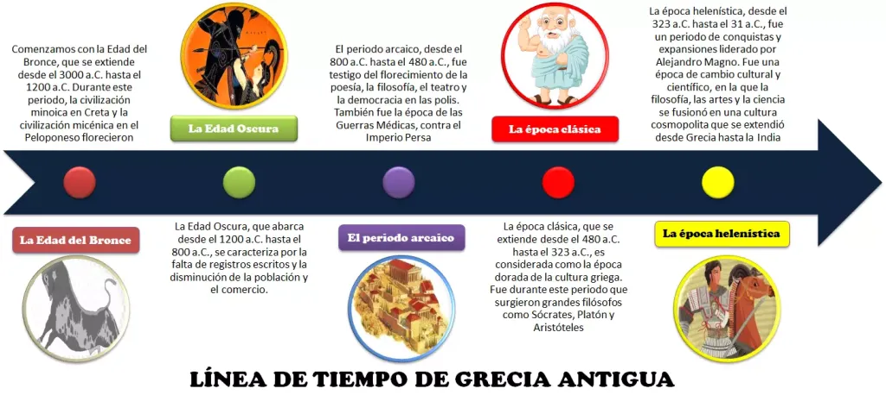
- La civilización Minoica (alrededor del 3000 a.C. – 1450 a.C.): La época minoica se desarrolló principalmente en la isla de Creta, en el mar Egeo. Esta civilización era marítima y pacífica, con un fuerte enfoque en el comercio y la navegación, lo que les permitió establecer rutas comerciales con otras regiones del Mediterráneo.
Los centros de poder y actividad cultural se encontraban en grandes palacios, como el de Cnosos, que actuaban como núcleos administrativos, económicos y religiosos. El declive de la civilización minoica se asocia a varios factores, como la erupción del volcán de Tera (actual Santorini), que provocó tsunamis y daños graves en la isla. Posteriormente, los micénicos invadieron Creta, sumando presión política y militar que contribuyó al fin de la era minoica.
- La civilización Micénica (alrededor del 1600 a.C. – 1100 a.C.): La civilización micénica fue una sociedad avanzada de la Edad de Bronce en la Grecia continental, conocida por sus palacios fortificados, desarrollo de la escritura lineal B y su influencia en la cultura griega posterior. Hacia el final del siglo XII a.C., la civilización micénica comenzó a declinar debido a conflictos internos, invasiones exteriores y posibles desastres naturales, culminando en un colapso que dio paso al llamado Período Oscuro griego.
2. Edad oscura (1100-800 a. C.)
Durante este periodo, se produjo un colapso de los centros urbanos micénicos y la mayor parte del conocimiento escrito se perdió, incluyendo la escritura lineal B. La sociedad se reorganizó en pequeños pueblos y aldeas, con menor complejidad social y económica. La agricultura y la ganadería se mantuvieron como actividades principales, aunque con menor producción que en la época micénica. Se pasó del bronce al hierro.
Este período también estuvo caracterizado por migraciones y desplazamientos de poblaciones, lo que impulsó la difusión de culturas y costumbres locales más simples. A pesar de la aparente oscuridad, se produjeron avances fundamentales para el desarrollo posterior, como la transición hacia el alfabeto griego y la consolidación de tradiciones orales que más tarde influirían en la poesía épica, incluyendo obras como las de Homero.En este sentido, la Edad Oscura no fue solo un periodo de retroceso, sino también un tiempo de transformación cultural y asentamiento de bases para la Grecia arcaica.
3. Era arcaica (800-490 a. C.)
Durante la Era Arcaica, después de la época oscura griega, hubo un resurgimiento de la civilización, con importantes cambios sociales, políticos y culturales. Fue un período de crecimiento urbano y expansión comercial, marcado por la fundación de nuevas colonias en el Mediterráneo y el Mar Negro. Se consolidaron las primeras polis o ciudades-estado como Esparta y Atenas, cada una con formas de organización política distintas. Se desarrollaron nuevas instituciones que buscaban regular la vida cívica, la justicia y el gobierno local. Las diferencias sociales también comenzaron a estructurarse más claramente, con aristocracias dominantes y la aparición de clases populares urbanas.
La agricultura continuó siendo la base de la economía, pero el comercio marítimo ganó importancia, permitiendo el intercambio de productos, ideas y técnicas con otras civilizaciones del Mediterráneo. También surgieron avances significativos en escultura y arquitectura, como la aparición de los primeros templos dóricos y jónicos, junto con las primeras esculturas monumentalizadas del período arcaico griego. En literatura, se consolidan las obras épicas, inspiradas en Homero y Hesíodo, que transmitían valores y mitos compartidos.Además, comenzaron a surgir los primeros desarrollos filosóficos y científicos, sentando las bases para la filosofía clásica que florecería en la época posterior.
4. Época clásica (490-320 a. C.)
Durante la época clásica, las polis griegas experimentaron un desarrollo significativo en política, cultura y sociedad. Cada polis (ciudad-estado) gozaba de gran autonomía, desarrollando distintos sistemas políticos: Atenas destacó por su democracia directa, donde los ciudadanos libres participaban activamente en debates y decisiones; Esparta mantuvo un régimen oligárquico-militar enfocado en la disciplina y la formación de soldados. La política de esta época también estuvo marcada por conflictos constantes, como las Guerras Médicas contra el Imperio Persa, que unieron a varias ciudades-estado griegas y consolidaron el prestigio de Atenas, y la Guerra del Peloponeso, que enfrentó a Atenas y Esparta y evidenció las tensiones internas entre las polis.
Este periodo se caracteriza por un notable esplendor cultural. La filosofía alcanzó grandes logros con figuras como Sócrates, Platón y Aristóteles, quienes exploraron la ética, la política y la lógica, influyendo profundamente en el pensamiento occidental. En ciencia y matemáticas, Euclides destacó en geometría, mientras que Hipócrates y Alcmeón aportaron avances en medicina. La literatura floreció con la tragedia y comedia griegas, representadas por Sófocles, Eurípides y Aristófanes. La arquitectura reflejó la grandeza de la polis, siendo el Partenón en Atenas un símbolo de armonía y proporción. Este periodo dejó una huella profunda en la cultura occidental, consolidando ideales que perduran hasta hoy, como la democracia, la filosofía racional y el arte monumental.
5. Época helenística (323-30 a. C.)
En este periodo, tras la debilidad de las polis, el Reino de Macedonia toma el control. El rey macedonio Alejandro Magno conquistó las diferentes polis griegas y las unificó bajo un gran imperio que se extendió hacia todas las direcciones. A través de diferentes instituciones, el imperio de Alejandro difundió varios aspectos de la cultura griega hacia Oriente. La cultura helenística se caracterizó por la combinación de la cultura griega con la de los diferentes pueblos orientales conquistados bajo el Imperio alejandrino.
Tras la muerte de Alejandro Magno en 323 a.C., su vasto imperio se fragmentó en varios reinos helenísticos, gobernados por sus generales (diádocos). Entre los más importantes se encontraron: el Egipto Ptolemaico, el Imperio Seléucida en Asia y el Reino de Macedonia en Europa. Esta división dio lugar a conflictos sucesorios conocidos como las Guerras de los Diádocos, pero también permitió la extensión de la cultura griega más allá de Grecia.
Durante esta época florecieron escuelas filosóficas como el estoicismo y el epicureísmo, que proponían formas de vida y pensamiento adaptadas a un mundo más amplio e incierto. A nivel científico, hubo avances destacados en astronomía, medicina y matemáticas. También el arte se distinguia por su realismo y expresión emocional, a diferencia de la rigidez clásica. El periodo helenístico dejó un legado cultural duradero. La lengua griega se convirtió en un medio común de comunicación en el Mediterráneo y en Asia, facilitando el intercambio cultural y comercial. Además, esta época preparó el terreno para la expansión del Imperio Romano, que adoptó muchas ideas, prácticas y estilos artísticos del helenismo.
Entre los siglos IV y I a. C., la República romana llevó a cabo un proceso de expansión a través de la conquista de los diferentes pueblos de la región mediterránea. Durante este periodo, los romanos entraron en contacto con diferentes culturas que desconocían y que generaron cambios en sus costumbres y valores.
La mayor influencia cultural que recibió la sociedad romana fue la de la cultura griega. En el siglo II a. C., los romanos conquistaron los reinos helenísticos (Macedonia, Grecia y Pérgamo) y tomaron las obras de arte, las joyas y diferentes bienes materiales y se los llevaron como botines de guerra a Roma.En este contexto, los romanos también llevaron intelectuales, filósofos, pensadores y estudiosos griegos hacia Roma. Algunos de ellos fueron empleados como maestros de los jóvenes de las familias aristocráticas romanas, otros como asistentes burocráticos.
Así, se inició un proceso de helenización de la cultura romana. Las familias ricas aprendieron la historia y las costumbres de la Grecia clásica. Además, se extendió el culto a los dioses del Olimpo, que se asimilaron a divinidades locales y se vincularon con las historias del panteón romano. Esta tradición cultural grecorromana se constituyó siglos más tarde como uno de los principales elementos de la cultura europea occidental.
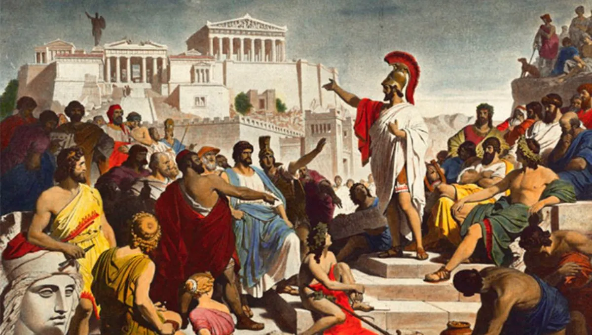
La religión griega antigua era politeísta y estaba profundamente integrada en la vida cotidiana, veneraban a múltiples dioses, cada uno asociado con fenómenos naturales, emociones, ocupaciones o conceptos abstractos. Por ejemplo, Zeus era el rey de los dioses y símbolo de autoridad y justicia; Atenea representaba la sabiduría y la estrategia bélica; Afrodita, el amor y la belleza; y Poseidón, los mares y terremotos. Cada deidad tenía un rol específico en la vida humana y social, y su influencia se percibía en aspectos tan diversos como el clima, la fertilidad, la guerra y la moralidad.
La religión no era solo un conjunto de creencias, sino que penetraba todas las facetas de la vida: en la agricultura, los griegos realizaban ofrendas a Deméter para asegurar buenas cosechas; en la guerra, se buscaba la protección de Ares o Atenea; y en la ciudad-estado, los rituales y festivales como las Panateneas en Atenas reforzaban la identidad colectiva y la cohesión social. La religión griega politeísta no solo explicaba el mundo natural, sino que también estructuraba la sociedad, guiaba el comportamiento moral y fortalecía el sentido de comunidad a través de rituales y festivales públicos, mostrando cómo la espiritualidad estaba entrelazada con la vida diaria de los griegos antiguos
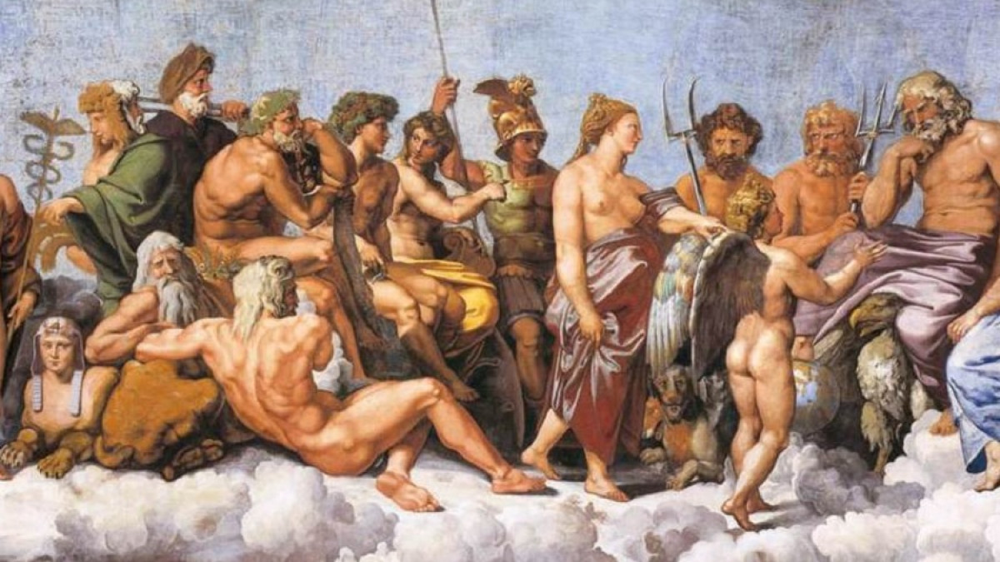
La civilización griega es considerada una de las bases más importantes de la cultura occidental, influyendo en filosofía, política, ciencia, arte y literatura de civilizaciones posteriores.
Influencia en la democracia: En Atenas surgió la idea de que los ciudadanos podían participar en el gobierno, esto influyó en los sistemas democráticos actuales.
Influencia en la filosofía: Los griegos desarrollaron el pensamiento racional. Ideas de filósofos como Sócrates, Platón y Aristóteles siguen presentes en: La educación, la ética, la política.
Influencia en el arte: El arte griego estableció modelos de belleza, proporción y armonía que aún se utilizan.
Influencia en la ciencia: Los griegos buscaban explicar el mundo mediante la razón, lo que contribuyó al desarrollo del pensamiento científico.
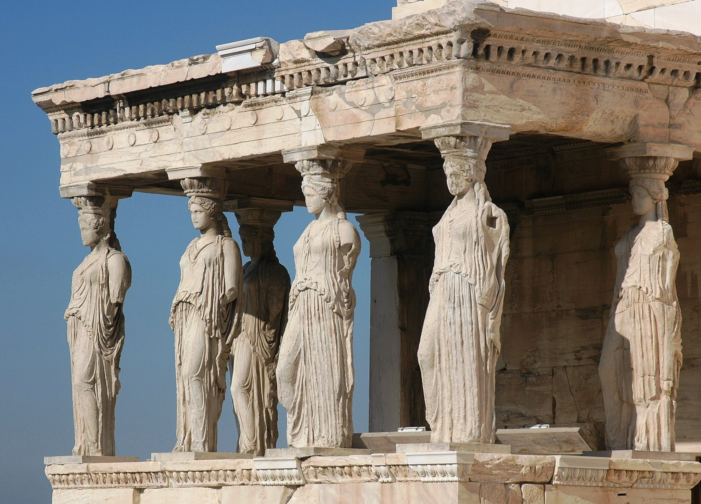
Desde la época antigua los griegos observaron en la educación la base de la formación de los seres humanos como ciudadanos y personas libres; para ellos, la educación era entendida como “paideia” que significa “formación” o “educación”.
La educación en la antigua Grecia, conocida como paideia, buscaba el desarrollo integral del ciudadano (físico, intelectual y moral) para alcanzar la areté o excelencia. Basada en Atenas (integral) y Esparta (militar), combinaba gimnasia, música, literatura y, para los más avanzados, filosofía y retórica.
Atenas , a diferencia de Esparta, fue la primera en renunciar a una educación orientada a los futuros deberes del soldado. El ciudadano ateniense, por supuesto, siempre estaba obligado, cuando era necesario y capaz, a luchar por la patria. La evolución de la educación ateniense reflejó la de la propia ciudad , que avanzaba hacia una creciente democratización.
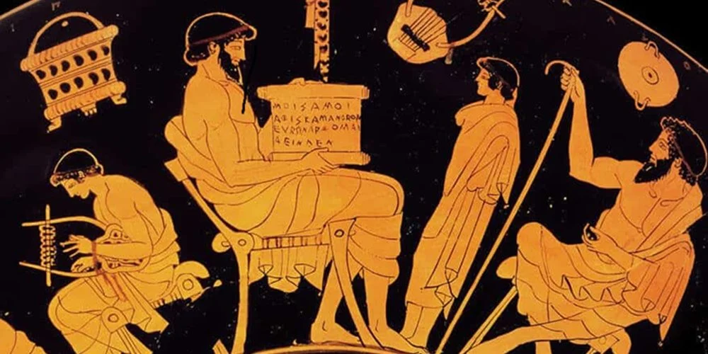
La educación espartana, por otro lado, fue conocida como agogé, esta comenzaba con un riguroso examen de los recién nacidos. Los funcionarios del Estado evaluaban a cada bebé para determinar si cumplía con los estándares físicos necesarios para convertirse en un futuro guerrero. A partir de los siete años, los niños espartanos ingresaban en un sistema educativo obligatorio, estrictamente supervisado por el Estado. La agogé estaba diseñada para inculcar valores fundamentales como la obediencia, la disciplina y la resistencia. Los jóvenes eran agrupados en batallones, donde la figura del irene, un líder juvenil, guiaba su formación.
En el sistema educativo griego se impartían conocimientos en retórica, poesía y matemáticas, se consideraban que estas disciplinas dotaban al individuo de conocimientos, pero también formaban su carácter para tener control sobre sí mismos y así poder ejercer de manera adecuada sus deberes como ciudadanos.
Es necesario recordar que solo los hombres-varones, libres y de cierto estatus social eran considerados como ciudadanos dentro de la organización social de los griegos, lo cual significa que el resto de la población (mujeres, esclavos, campesinos, extranjeros, etcétera) no podían acceder a ningún tipo de formación.La manera en que fue entendida y puesta en práctica la paideia griega a lo largo del desarrollo social e histórico de Grecia antigua es muy diversa, pero podemos recuperar algunas características que consideramos importantes.
- En sus orígenes, la paideia griega buscaba que sus ciudadanos alcanzaran un equilibrio entre la formación física, la intelectual y espiritual. A esta búsqueda de equilibrio los griegos la denominaban kalokagathía, que tenía como objetivo primordial alcanzar la areté, es decir, la virtud.
- Mediante la gimnasia se buscaba que el ciudadano griego aprendiera sobre el cuidado del cuerpo y el manejo de distintas armas.
- La música, el aprendizaje sobre la dialéctica, la retórica y las artes fomentaban el desarrollo de conocimientos intelectuales que se veían complementados con la formación del ethos o carácter, con la intención de aprender a vivir en comunidad y cumplir con sus deberes ciudadanos de la mejor manera.
- Por último, podemos decir que la paideia griega buscaba el perfeccionamiento del ser humano, mediante el dominio y conocimiento de sí mismo de manera corporal, intelectual y espiritual.
En ese sentido, la paideia busca el deber ser del ciudadano, pues la buena formación de éste traerá beneficios para sí mismo, pero también y de manera muy importante, traerá beneficios al ámbito público y social en el que vive.
La educación fomentada por los griegos no incluía ningún tipo de aprendizaje en habilidades manuales, dado que este tipo de labores eran consideradas indignas para los ciudadanos libres, quienes estaban llamados al ocio (scholé) y, por lo tanto, a la contemplación de la verdad.
En cuanto al ocio (scholé), es entendido como el estado de liberación de la necesidad de trabajar, lo cual permitía que los ciudadanos pudieran dedicar su tiempo e interés en la búsqueda de la sabiduría-contemplación de la verdad-, y del mejor modo de vida.
Solo una vida libre de la necesidad de trabajar y de las agitaciones cotidianas puede coadyuvar a alcanzar el bios theoretikos (vida contemplativa), que es para la sociedad griega la mejor forma de vida, de tal suerte, que, dentro de esta sociedad, son los filósofos-los amantes de la sabiduría- quienes más se acercan a una vida dedicada al ocio, es decir, a la contemplación de la verdad.
En conclusión, la idea de base era que sin educación no podía haber cultura, y sin cultura no cabría imaginar un ejercicio modélico de la ciudadanía, que incluía una participación influyente en los órganos políticos de la democracia directa y una prestación militar casi vitalicia.
En la antigua Grecia, muchos ciudadanos necesitaban a sus hijos –lo mismo que a las hijas– como fuerza de trabajo desde una edad temprana, y la escuela había que pagarla. Aunque no tenemos porcentajes mínimamente fiables sobre alfabetización en la antigua Grecia, podemos dar por descontado que la paideia propiamente dicha dejaba fuera a la mayoría de los ciudadanos. Cabe suponer que el nivel económico era más determinante que el sexo para marcar ese límite.
A pesar de que la educación iba dirigida casi exclusivamente a la formación del ciudadano, la polis o ciudad estado no se ocupaba de organizarla y costearla (salvo en el caso de Esparta). No existían programas ni manuales escolares, aunque sí se inspeccionaban las actividades. No se hacían exámenes, pero sí muchas competiciones. El espíritu agonístico, la lucha por ser el mejor, creaba importantes estímulos, aunque no faltaba el «jarabe de palo».
En cualquier caso, esa enseñanza primaria combinaba el aprendizaje de las letras (grammata, la gramática) con el de las distintas variedades musicales y con el del atletismo. Una tablilla votiva hallada en Corinto presenta a niños tocando la lira y la flauta en un ritual, y sabemos por el testimonio del político ateniense Alcibíades que en la escuela se aprendía a luchar. Todo ello se completaba con la iniciación a las matemáticas, diferenciadas en dos ramas: la aritmética, o estudio de los números, y la geometría, que trataba de las relaciones espaciales.
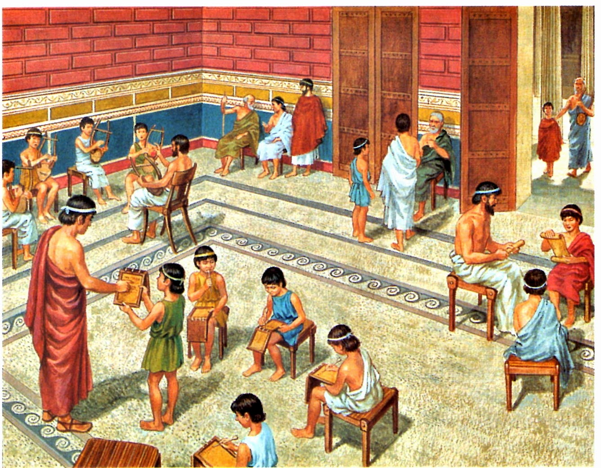
Parece claro que las niñas de cierto nivel económico, destinadas al matrimonio legítimo y al control de la casa, recibían una enseñanza básica similar a la de los varones. Lo que no está tan claro es que tuviera lugar siempre en el ámbito doméstico, porque sabemos que las mujeres griegas salían con frecuencia de él para realizar actividades diversas, aunque siempre acompañadas por otras mujeres, a no ser que fueran ancianas.
Una feliz excepción es la obra de la poeta Safo, que nació en la isla de Lesbos en el siglo VII a.C. De los 10.000 versos líricos que habría llegado a escribir –y que recibieron encendidos elogios– se han conservado unos 600. Safo era una mujer casada, que dirigía una «escuela de señoritas» de un tipo quizá no infrecuente. Las adolescentes se preparaban para el matrimonio aprendiendo poesía, música y danza en un clima homoerótico.
Otro ejemplo son las heteras atenienses, un colectivo selecto de mujeres en el área cultural. Ellas se salían del limitado papel social reservado a las esposas legítimas, las únicas cuyos hijos podían ser ciudadanos. Sin embargo, la actividad de estas últimas no debía de estar tan restringida como parece. En el Económico de Jenofonte, una especie de tratado sobre la administración de la hacienda escrito en el siglo IV a.C., vemos cómo un rico ciudadano se jacta de que su joven esposa haya aprendido a llevar esos asuntos hasta el punto de que puede delegarlos en ella. Y no faltan testimonios de la actividad económica de las mujeres de la familia en el ámbito patrimonial.
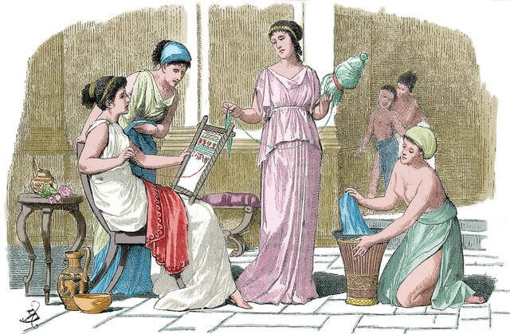
Cronológicamente se sitúa en un periodo que comienza el año 323 a.c, coincidiendo con la muerte de Alejandro Magno hasta el año 148 a.c, fecha de la invasión romana de Macedonia. A partir de este momento, Grecia deja de ser independiente. La polis o ciudad estado, desaparece para dejar paso a la monarquía. La democracia, la lógica y la razón, desaparecen con ella. Atenas, pierde su posición privilegiada, excepto en el ámbito de la cultura.
Inicialmente, para Aristóteles el hombre es un animal político mientras que Platón establece que el hombre sólo puede ser feliz en medio de la polis. Sin embargo, ahora que entra en juego la filosofía helenística, será el individuo el centro del debate filosófico, empezando así a demandarse su independencia del resto de elementos, alegando a su autonomía. El individuo será el que sustituya a la ciudad, y la ética a la política.
La ética helenística se fundamenta en las leyes de la naturaleza, y su finalidad u objetivo es puramente práctico. Se vuelve mucho más natural, ya que se trataba de encontrar una forma que ayude al ser humano a vivir mejor. Toda la filosofía helenística se va a fundamentar en la moral, y queda dividida en 3 ramas principales: epicureísmo, estoicismo y escepticismo; todas ellas poniendo especial énfasis en la filosofía moral.
Los sofistas fueron un grupo de estudiantes y maestros de retórica (el arte del discurso) que vivieron principalmente en Atenas durante los siglos V y IV a. C. Los sofistas no fueron un grupo homogéneo: cada maestro predicaba y enseñaba a su manera, sin un conjunto de reglas o principios que seguir. Los sofistas más famosos son Protágoras (485 – 411 a. C.) y Gorgias de Leontinos (483 – 375 a. C.), quien todavía hoy es conocido por sus obras Sobre la Naturaleza o el No Ser y Encomio de Helena.
Tanto Protágoras como Gorgias tuvieron como contrincantes filosóficos a Sócrates, Platón y Aristóteles. Ambos aparecen como personajes en varias de las obras platónicas y además fueron acusados de persuadir audiencias y asambleas políticas para beneficio propio.
La palabra “sofista” viene del griego sophistes, formado por la unión desophía, “sabiduría”, y sophós, “sabio”. No se los consideraba maestros de la sabiduría sino profesionales del conocimiento y la elocuencia
Pero dado que los poetas y filósofos cobraban por sus servicios, se les acusó de perseguir a través del debate, no la verdad, sino únicamente la victoria argumentativa, incluso a través de métodos de pensamiento falaces o deshonestos, un reclamo que les hicieron sus contemporáneos, como Píndaro (c. 518–438 a. C.) o Sócrates (470–399 a. C.).
A partir del siglo V a. C., el término sofista comenzó a emplearse con el sentido de farsante o charlatán. Esto se aplicó no solo a filósofos sino a escritores, poetas, oradores y profesores de retórica por igual.
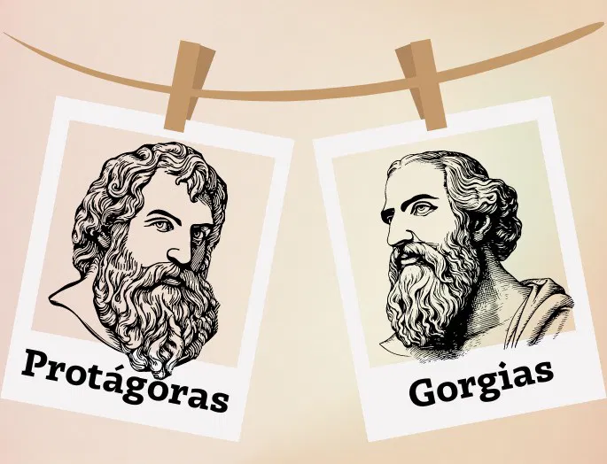
Algunos de los principales sofistas de la tradición griega fueron:
Protágoras de Abdera (c. 485–c. 411 a. C.). Fue un pensador, viajero y maestro griego de retórica. Viajaba por el país cobrando elevadas tarifas por enseñar, por ejemplo, el correcto uso de las palabras. Protágoras fue famoso por enseñar que “El hombre es la medida de todas las cosas, de las que son en cuanto que son, de las que no son en cuanto que no son”. Platón le dedicó uno de sus diálogos, llamado Protágoras.
Gorgias de Leontinos (483–375 a. C.). Fue discípulo de Empédocles y conocedor del pensamiento de Zenón de Elea y de Parménides. Fue respetado como filósofo incluso por sus detractores. Algunos le atribuyen el rol de padre de la oratoria y fundador de la epidíctica, que es una forma de discurso que elogia o censura a una persona. Sus obras más conocidas son Sobre la Naturaleza o el No Ser y el Encomio de Helena.
La historia de la filosofía occidental no puede comprenderse sin estudiar la relación intelectual y humana entre Sócrates, Platón y Aristóteles. Estos tres pensadores forman la base del pensamiento filosófico griego y de toda la tradición filosófica que surgió posteriormente en Europa. Sócrates, Platón y Aristóteles no sólo representan una línea de continuidad histórica, sino también un desarrollo lógico en la manera de entender la verdad, el conocimiento, la ética y la política. Sus ideas marcaron el nacimiento del pensamiento racional y sentaron las bases del método filosófico que aún hoy continúa influyendo en la ciencia, la lógica y la moral.
Los tres padres de la filosofía
En la tradición occidental, los tres padres de la filosofía son precisamente Sócrates, Platón y Aristóteles. Aunque hubo filósofos anteriores —como Tales de Mileto, Heráclito o Parménides—, fueron estos tres pensadores quienes establecieron los principios fundamentales del pensamiento racional. Sócrates es considerado el padre de la ética y del método dialéctico; Platón, el fundador de la filosofía idealista y de la teoría de las Ideas; y Aristóteles, el creador del pensamiento lógico y científico sistemático. Gracias a ellos, la filosofía dejó de ser una simple reflexión sobre la naturaleza para convertirse en una búsqueda racional del conocimiento y de los principios del ser.
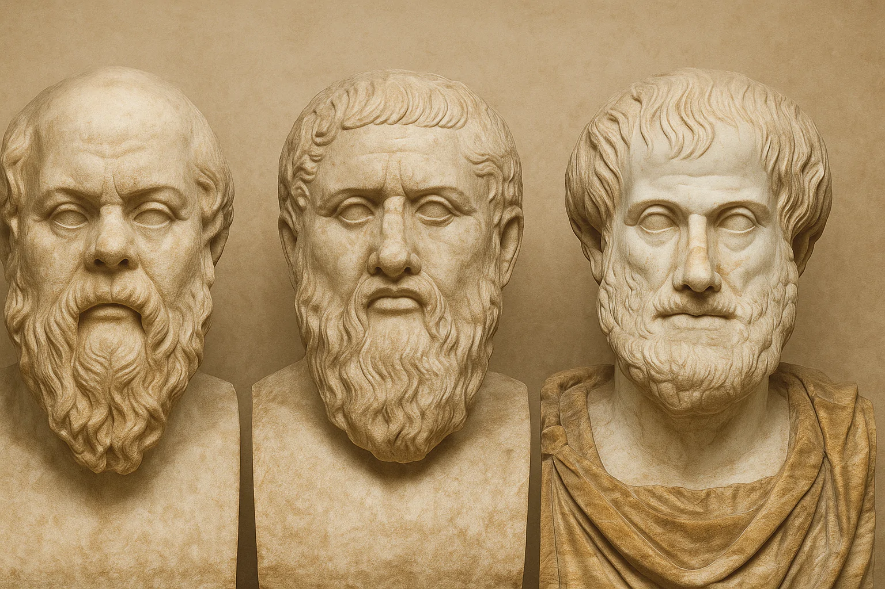
La verdad para Sócrates: Para Sócrates, la verdad era el resultado de un proceso de autoconocimiento. Su famosa frase “Conócete a ti mismo” resume su pensamiento: la verdad se alcanza cuando el individuo examina su propia alma y sus creencias. Sócrates no creía que la verdad pudiera enseñarse directamente; en cambio, pensaba que el papel del filósofo era ayudar a otros a descubrirla por sí mismos mediante el diálogo y la reflexión. El método socrático consistía en hacer preguntas para que el interlocutor reconociera sus contradicciones y, finalmente, llegar a una comprensión más clara. Para Sócrates, la verdad era inseparable de la virtud, pues quien conoce lo que es el bien no puede obrar mal.
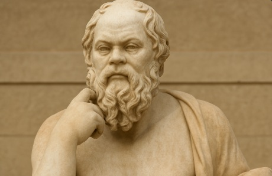
La verdad para Platón: Platón desarrolló la idea socrática de la verdad, pero le dio una dimensión metafísica. Según Platón, la verdad no se encuentra en el mundo sensible, sino en el mundo de las Ideas o Formas. En la “Alegoría de la cueva”, explica que los seres humanos viven viendo sombras, creyendo que son la realidad, pero la verdad está fuera de la cueva. Para Platón, la verdad es eterna, universal y solo puede alcanzarse mediante la razón.
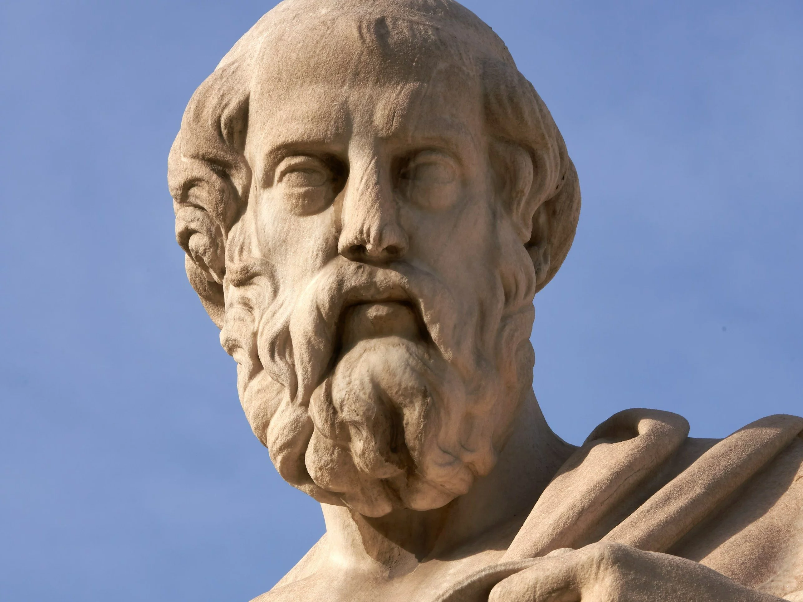
La verdad para Aristóteles: Aristóteles sostuvo que la verdad se encuentra en la realidad misma. El conocimiento se obtiene mediante la observación y la experiencia. Para él, decir la verdad es afirmar lo que es como es. A diferencia de Platón, no separa el mundo sensible del mundo de las ideas, sino que los une mediante la razón.
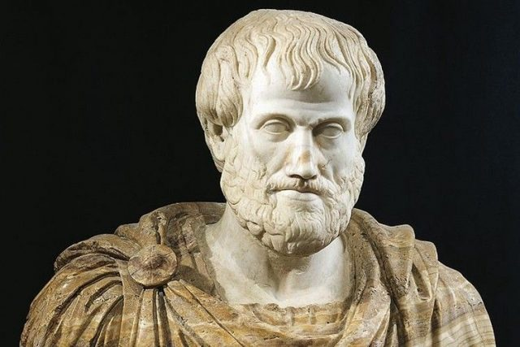
La ética y la verdad en los tres filósofos:Aunque sus concepciones de la verdad difieren, Sócrates, Platón y Aristóteles coinciden en vincularla con la ética. Para los tres, el conocimiento verdadero conduce a una vida virtuosa. Sócrates afirmaba que nadie hace el mal voluntariamente; Platón creía que el alma justa es aquella que conoce el Bien Supremo; y Aristóteles sostenía que la felicidad se alcanza mediante la virtud, que es un equilibrio racional entre los extremos. Así, la verdad no es solo un problema teórico, sino también una guía para la acción. El filósofo, al buscar la verdad, busca también el modo correcto de vivir.
Influencia de Sócrates, Platón y Aristóteles:La influencia de Sócrates, Platón y Aristóteles se extiende a lo largo de más de dos milenios. La filosofía cristiana, el pensamiento moderno y la ciencia contemporánea beben de sus ideas. Platón inspiró el pensamiento idealista y la teología cristiana, mientras que Aristóteles fue la base de la escolástica medieval y del método científico. Sócrates, por su parte, sigue siendo símbolo del espíritu crítico y de la coherencia moral.
Vida y método
Sócrates nació en 470 a.C. en Atenas y es conocido por su método dialéctico, también llamado mayéutica. Este método se basaba en hacer preguntas incisivas para ayudar a sus interlocutores a descubrir verdades por sí mismos. Sócrates no dejó escritos, por lo que su pensamiento nos llega a través de los diálogos de su discípulo Platón.
Enseñanza y legado
La principal enseñanza de Sócrates es la importancia del autoconocimiento resumido en la famosa frase: “Conócete a ti mismo”. También defendía que la virtud es conocimiento y que el mal es resultado de la ignorancia. Su juicio y condena a muerte por corromper a la juventud ateniense y no creer en los dioses de la ciudad marcó un antes y un después en la historia de la filosofía.
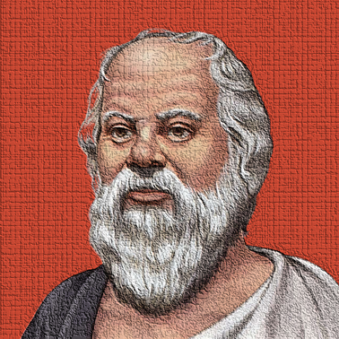
Vida y obra
Platón, nacido en 427 a.C., fue discípulo de Sócrates y el fundador de la Academia de Atenas, una de las primeras instituciones de educación superior del mundo occidental. A través de sus escritos, Platón no sólo preservó el pensamiento de Sócrates, sino que también desarrolló sus propias teorías.
Teoría de las ideas
Una de las contribuciones más importantes de Platón es su Teoría de las Ideas o Formas. Según esta teoría, el mundo sensible que percibimos con nuestros sentidos es solo una sombra del verdadero mundo, que es eterno e inmutable. Este mundo de las Ideas es accesible sólo a través de la razón y el intelecto.
Teoría de las ideas
En su obra "La República", Platón explora diferentes formas de gobierno y plantea su visión de un estado ideal gobernado por filósofos-reyes. Esta obra ha influido en el pensamiento político occidental y sigue siendo objeto de estudio y debate.
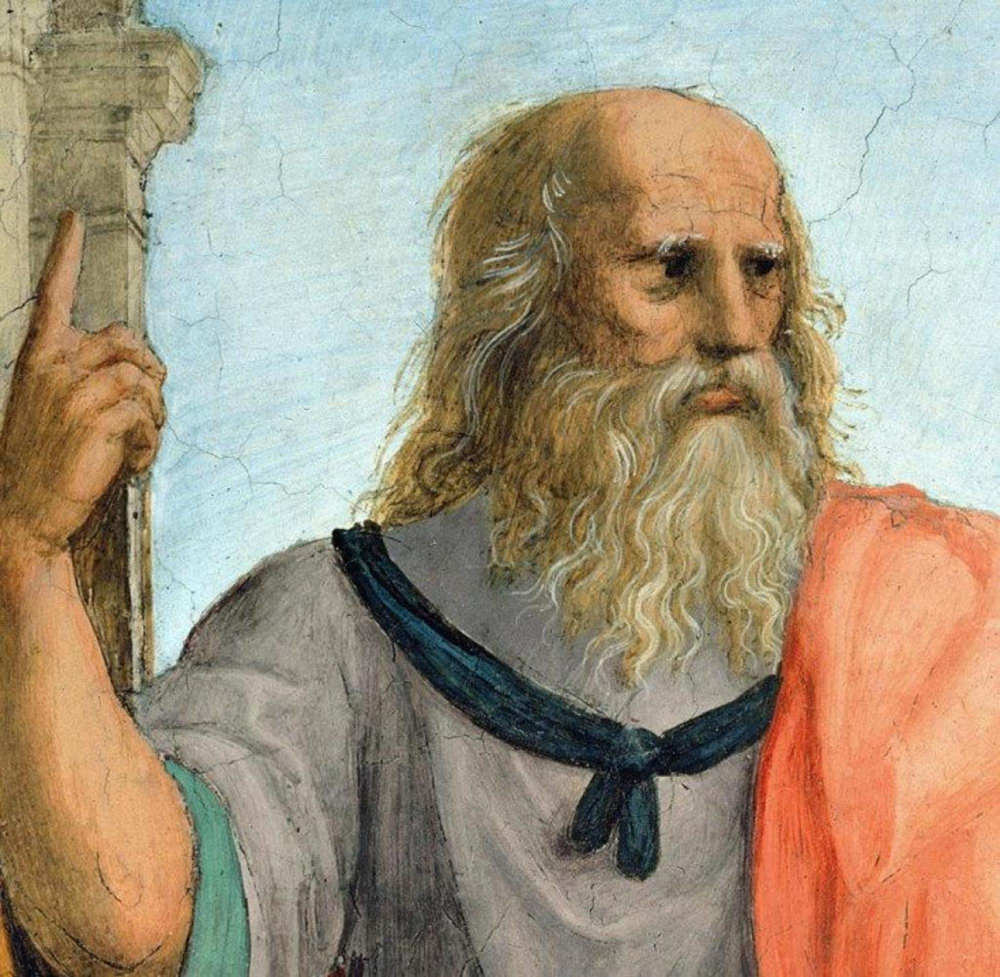
Vida y formación
Aristóteles, nacido en 384 a.C., fue discípulo de Platón en la Academia. Es el fundador de su propia escuela, el Liceo. A diferencia de Platón, Aristóteles enfatizó el estudio empírico y la observación del mundo natural.
Contribuciones filosóficas
Aristóteles realizó aportaciones en casi todas las ramas del conocimiento, desde la lógica y la metafísica hasta la ética y la política. Su enfoque sistemático y su método analítico establecieron las bases para la ciencia moderna. En ética, su concepto de la "virtud media" destaca la importancia del equilibrio y la moderación en la conducta humana.
Relación con Alejandro Magno
EAristóteles también es conocido por haber sido tutor de Alejandro Magno, quien llevó sus enseñanzas a lo largo de sus conquistas, difundiendo la cultura griega y las ideas aristotélicas por gran parte del mundo conocido
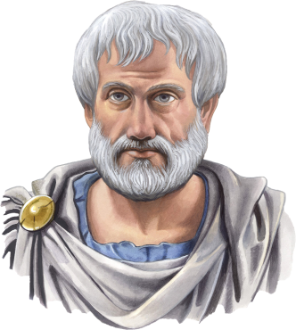
Las ideas de Sócrates, Platón y Aristóteles están profundamente interconectadas. Platón y Sócrates compartieron una relación de maestro y discípulo que influyó en las teorías platónicas. Del mismo modo, Aristóteles, al ser discípulo de Platón, aunque divergió en varios puntos, construyó sobre las bases sentadas por sus predecesores. Este diálogo filosófico a través de generaciones es fundamental para entender el desarrollo de la filosofía occidental.
Relevancia en la educación moderna
Las enseñanzas de estos filósofos todavía se imparten en escuelas y universidades de todo el mundo. Sus ideas sobre cómo vivir una vida virtuosa, cómo gobernar una sociedad y cómo entender el mundo natural siguen siendo temas centrales en la educación filosófica. Estudiar a Sócrates, Platón y Aristóteles no solo nos ayuda a entender la historia del pensamiento humano, sino que también nos proporciona herramientas para reflexionar sobre nuestras propias vidas y sociedades.
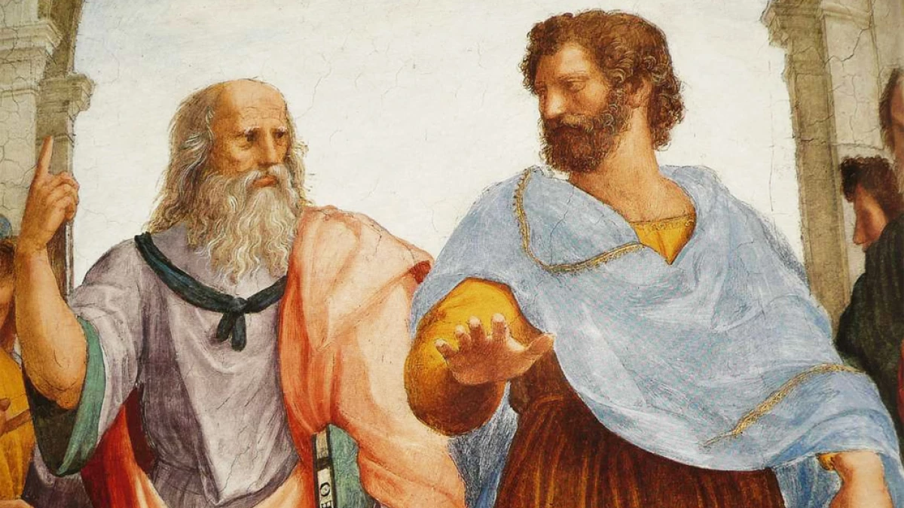
https://degreciaparaelmundo.blogspot.com/